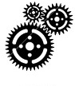
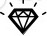
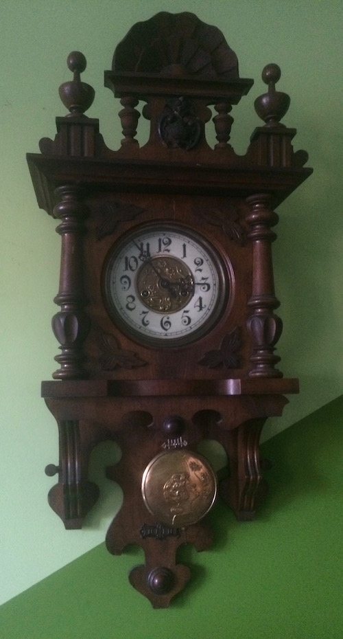
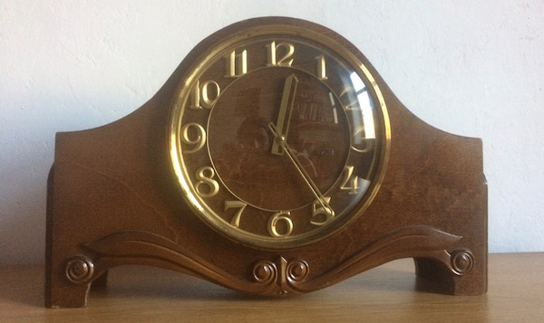
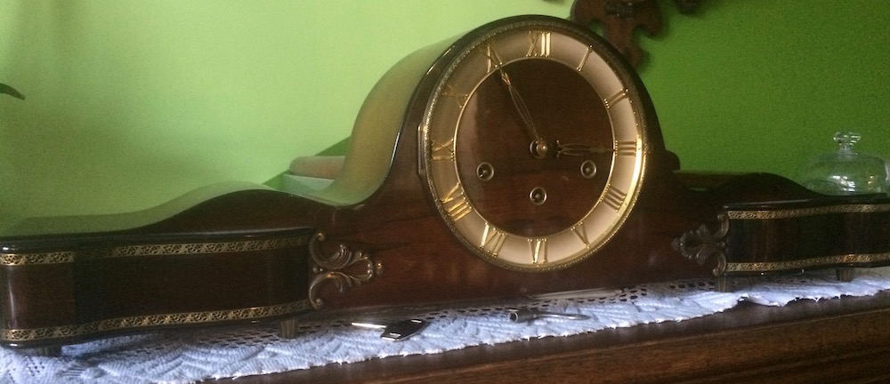
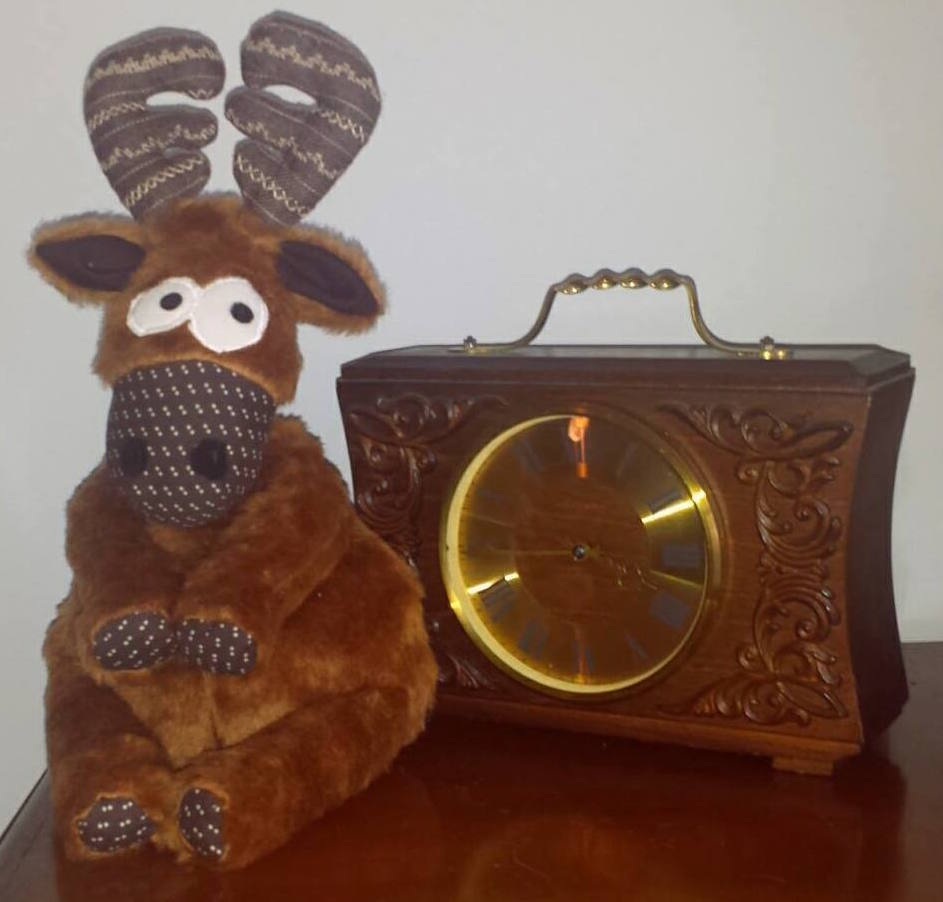
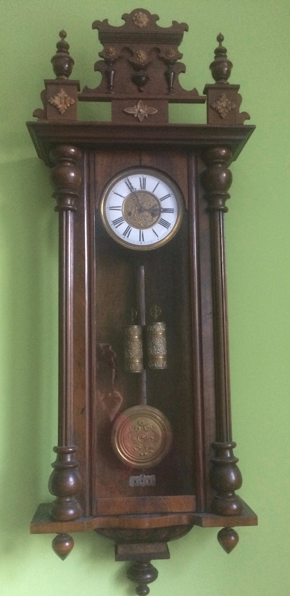
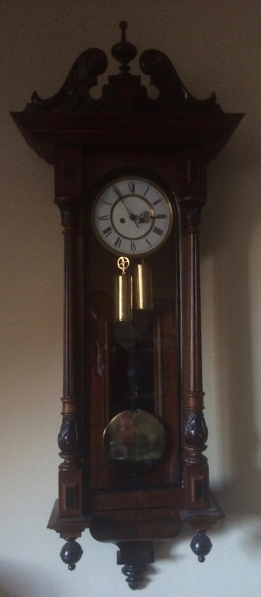

Zegarmistrz - Czapla
Witamy!
Od dwóch pokoleń zajmujemy się naprawą zegarów mechanicznych i przywracaniem blasku antykom. Cenimy tradycję i gwarantujemy najwyższą jakość usług. Chcąc jeszcze bardziej efektywnie odpowiadać na Państwa potrzeby, od teraz jesteśmy dostępni również on-line.
Nasza historia
Zakład założył w 1988 roku Mieczysław Czapla, do którego wkrótce dołączył jego siostrzeniec Janusz.Od początku specjalizowaliśmy się w naprawie zegarów zabytkowych.
Od roku 2012 tradycję kontynuuje Barbara Mrożkiewicz, córka założyciela.
Naprawa zegarów
Naprawiamy większość zegarów i zegarków, jednak szczególnym sentymentem darzymy te stare, mechaniczne. Zaufania naszych klientów dowodzi fakt, że oddają w nasze ręce cenne, nierzadko będące pamiątkami rodzinnymi zegary.
Utlradźwiękowe czyszczenie
Ta innowacyjna technologia przywróci dawny blask starej biżuterii, sztućcom, pamiątkowym zegarkom, a nawet okularom czy aparatom ortodontycznym.
Roczna gwarancja
Udzielamy rocznej gwarancji na większość naszych napraw.
 Sprzedaż zegarków i zegarów
Zegary i zegarki w naszej ofercie zostały uważnie wyselekcjonowane z myślą o pięknie i niezawodności. Nasza kolekcja pozwoli Państwu szybko znaleźć coś, co pasuje do Was lub Waszych najbliższych. Dla koneserów zwykle mamy parę zabytkowych perełek.
Zegar to też dzieło sztuki
Rzeźbione zegary to doskonałe uzupełnienie wnętrz w stylu klasycznym, secesyjnym czy art déco. Stanowią też intrygujący kontrast dla nowocześnie zaaranżowanej przestrzeni. Patrz: Zabytkowe zegary
Wygoda
U nas zapłacisz wszystkimi kartam płatniczymi. Przy okazji możesz także doładować telefony dla najbliższych.
Godziny otwarcia
Pn. - Pt. 8:30 - 17:00Kontakt
Dojazd
Zakład umieszczony jest obok Placu Żwirki i Wigury, 10 metrów od przystanku linii 1, 3, 7, 8,10,18, 24, 28, 30, 35, 50, 57. Bliskość węzła komunikacyjnego sprawia że łatwo do nas trafić czy zatrzymać się przejazdem, aby złożyć nam wizytę. Usytuowanie to jest również dogodne dla naszych stałych klientów spoza Bielska Białej (m.in. z Żywca i Węgierskiej Górki).
Zabytkowe zegary
Oprócz dużego wyboru nowych zegarów często mamy na sprzedaż zegary zabytkowe - sprawdzone, wyczyszczone i odnowione w naszym zakładzie.Obecnie mamy na sprzedaż:
1) Zegar wagowy marki Jughans z lat 60 - 70-tych ubiegłego wieku.2) Kominkowy Predom-Metron z wahadłem (nie przystawką) produkcji polskiej z lat 50-tych ubiegłego wieku.
Ostatnio aktualizowane: 09.01.2017
Nasze zegary
Poniższe egzemplarze nie są na sprzedaż ale podobne bywają u nas. Warto do nas zaglądać!Naścienny - "Ślązak"
Napoleon - "Wiesna"
Kominkowy - kwadransowy
Kominkowy - "Wiesna"
Obok zegara renifer zrobiony przez Martę Szarek, wnuczkę założyciela zakładu i autorkę loga - zegarowej czapli. Marta ma duszę artystyczną i jest właścicielką "Pracowni Mrówki"
Naścienny z naciągiem żyłkowym
Naścienny z naciągiem żyłkowym
Wszystkie zegary przedstawione na zdjęciach działają, a zostały naprawione i odnowione w naszym zakładzie.